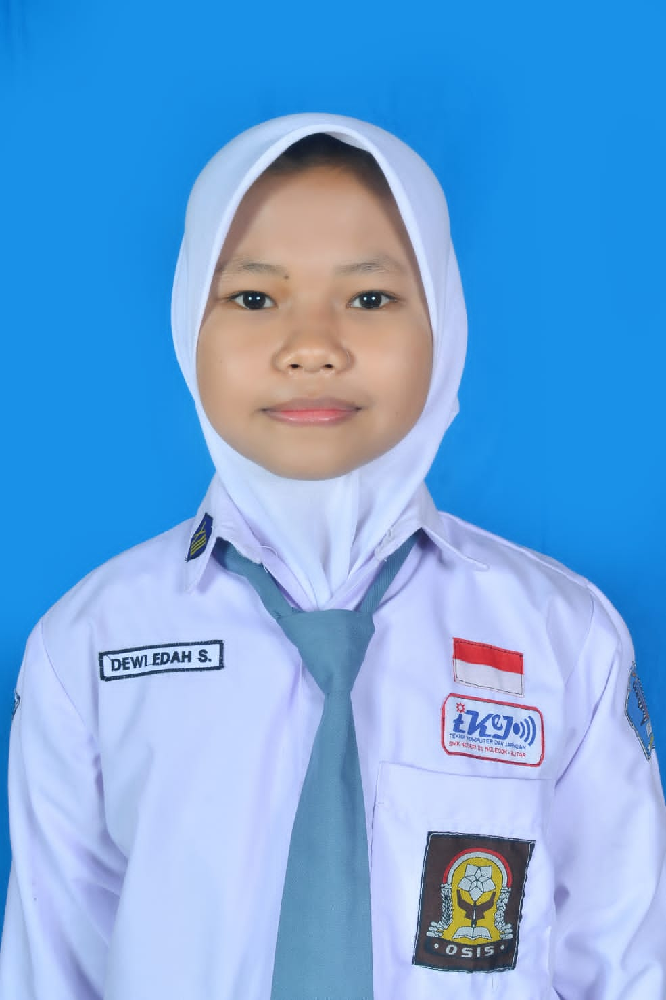

Belajar Progaming
“Be brave,take your first steps in learning with enthusiasm!”
tetap sehat,tetap semangat
ABOUT
HELLO EVERYONE
Nama saya Dewi Edah Sari bisa dipanggil dewi,saya siswa SMKN 1 NGLEGOK kelas 12 jurusan teknik komputer dan jaringan. SMKN 1 NGLEGOK adalah tempat saya belajar dan menambah ilmu,saya masuk jurusan TKJ karena ingin mempelajari dunia IT lebih jauh. Jurusan TKJ adalah satu jurusan yang mempelajari seluruh seluk beluk komputer dan jaringannya. Secara garis besar, jurusan ini akan mengajarkan terkait perakitan, pemasangan, perbaikan, dan jaringan komputer.

PORTOFOLIO
MY JOB AT SCHOOL